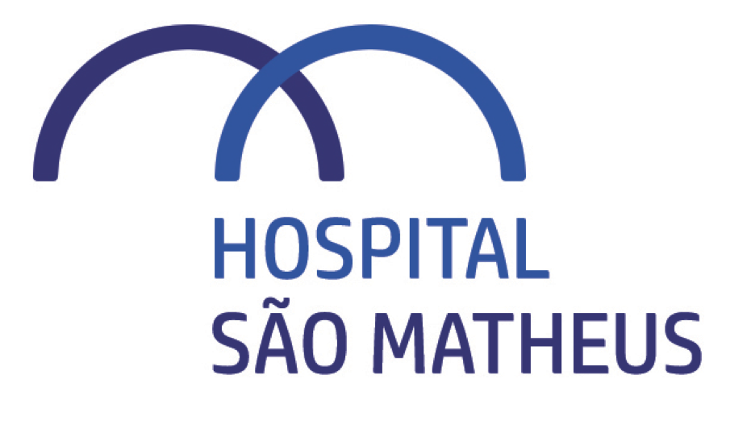

O acompanhamento das ações começa na primeira assinatura, o prazo vencido deixa de travar a ata, e recusas ou cancelamentos são resolvidos pelo próprio sistema, com o Aceite interno.
As tarefas de uma ata (as Pendências) só nasciam quando todas as pessoas assinavam o documento. Bastava um signatário esquecer de assinar para a ata ficar eternamente em "Aguardando assinatura", sem nenhuma tarefa criada. Quem assinava cedo já tinha se comprometido, mas as ações dele só apareciam dias depois, e a tela da reunião não mostrava nada desse progresso.
No momento em que alguém assina, todas as tarefas daquela pessoa aparecem no painel de Pendências, na hora: com prazo, cobrança e lembretes.
Se os 30 dias estouram com pelo menos uma assinatura, o documento fecha com o que tiver: a ata conclui e um selo discreto mostra quantos assinaram.
Recusa ou cancelamento? O sistema cobra os que faltam por email: cada um lê a ata completa e clica "Li e aceito". O compromisso vale e as tarefas nascem.
O card de signatários mostra "Pendências criadas: X de Y". O progresso do acompanhamento fica visível sem sair da tela.
Todos os dias às 5h30 o sistema confere as atas que seguem aguardando na plataforma de assinatura. O botão "Sincronizar" faz a mesma conferência na hora.
Clicar duas vezes em "Enviar para assinatura" não dispara dois envios: o botão trava durante o envio e a tela confirma o resultado.
Contador no card de signatários: "Pendências criadas: X de Y" ao lado da contagem de assinaturas.
Tarefas antes do fim: assim que alguém assina, as Pendências daquela pessoa surgem no painel.
Selo discreto na ata concluída: quando nem todos assinaram, o banner verde exibe "N de M assinaram".
Card âmbar de coleta interna: após recusa ou cancelamento, os que faltam recebem o email do Aceite interno.
Aceite manual auditado: o Super admin pode registrar o aceite de quem não responde, com registro na auditoria.
A ata da Comissão de Controle de Infecção, seguida de ponta a ponta nas telas do sistema: as assinaturas criando Pendências na hora, o prazo vencido concluindo a ata com o selo, e a recusa abrindo o Aceite interno. O vídeo não tem som: toda a comunicação está em tela.